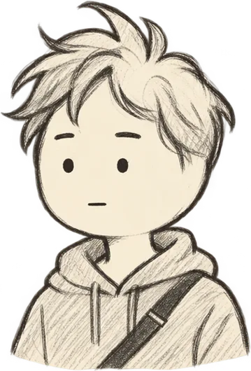
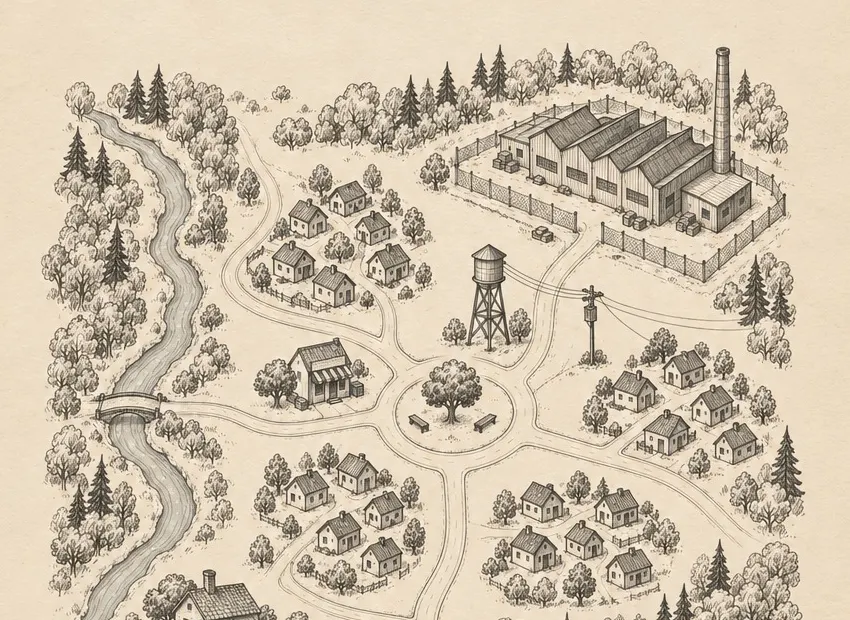
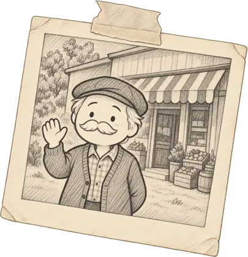

Sisliova Karar Masası
30 Günde Kasabayı Kurtar
Deden sana bir kasaba bıraktı. Ve 5 milyon lira borç. 84 kişinin evi artık sana bağlı.

Kurgusal animasyon serisi. Her bölümün sonunu yorumlar seçiyor.
Kasabanın bugünkü durumu
Gün
–
Kasa
–
Talep edilen borç
–
Güven
–
Kararı tek başına vermek ister misin?
Dizide kararı yorumlar veriyor. Oyunda Sisliova senin: 30 gün, her gün yeni bir karar, kasa, borç ve güven senin elinde.
- Dizideki karakterler ve kasaba
- Dizide seçilmeyen yollar da açık
- Birden çok son
Formda bıraktığın bilgiler yalnızca oyun çıktığında sana haber vermek için kullanılır, kimseyle paylaşılmaz. Silinmesini istersen Instagram'dan mesaj atman yeterli.
Kararı sen ver: bölümün altına tek kelime yaz. En çok beğenilen yorum hikâyeyi seçer.
Bölümü izle ve oy verBugüne kadar verilen kararlar


Dedenin notu
"Sisliova'yı onlara bırakma."
Onlar kim? Cevap bölümlerde.